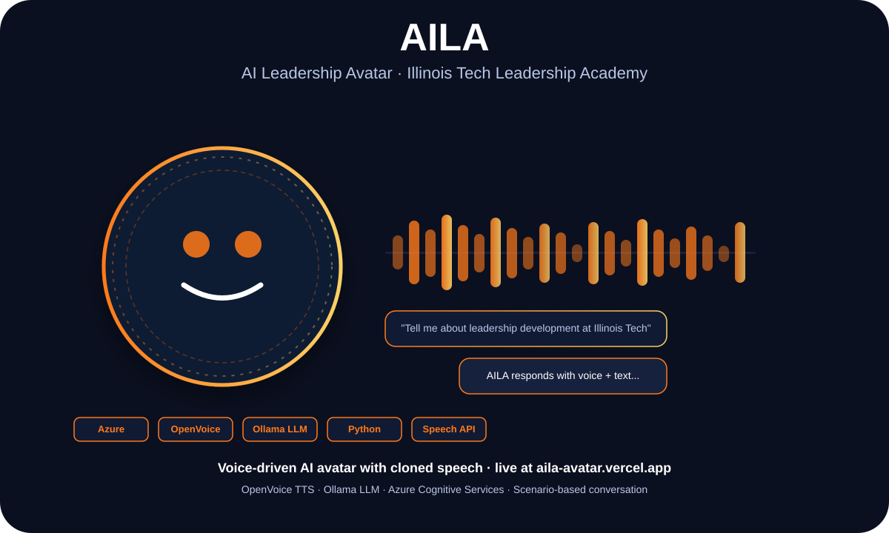

Applied AI · Voice Systems · Illinois Tech
AILA: What It Takes to Build a Voice-Driven AI Avatar That Doesn't Feel Like a Toy

Danish Nadar
AI Engineer · Illinois Institute of Technology
Adding a voice to an AI system sounds simple until you realize that tone, latency, and personality are engineering problems, not design decisions.

AILA — voice waveform, avatar presence, and chat interaction pipeline
The gap between "talking AI" and something that feels intentional
AILA started as a project for the Illinois Tech Leadership Academy — they needed a digital presence that could answer questions, represent the program's voice, and actually be useful for prospective students and visitors. The brief was simple. The execution was not.
The first version was text-only. That felt wrong immediately. Leadership presence isn't just content delivery — it's tone, confidence, and presence. So I started investigating voice. The challenge: text-to-speech engines all sound the same. Generic. Flat. They don't represent a specific person or institution.
That's when OpenVoice entered the picture — a TTS model that allows voice cloning and style transfer. Instead of a generic robotic voice, AILA could speak with a voice that had been shaped to match the program's identity. That's the engineering problem that actually mattered.

AILA live at aila-avatar.vercel.app
Stacking Ollama, Azure, and OpenVoice
The backend pipeline brings three systems together. Ollama runs local LLM inference — no cloud dependency for the reasoning layer, which keeps latency down and costs at zero. Azure Cognitive Services handles speech recognition on the input side. OpenVoice handles the synthesized audio output.
The orchestration layer in Python manages the flow: user speaks → Azure transcribes → Ollama generates a response → OpenVoice converts it to speech. Each piece has its own failure modes. Ollama occasionally produces inconsistent formatting. Azure's speech recognition stumbles on accents. OpenVoice adds latency at the output step.
The practical lesson: in multi-model pipelines, reliability is a first-class concern. You can't just evaluate each model independently. You have to evaluate the full chain under realistic conditions — different devices, different connection quality, different speaking styles.
Scenario-based conversations: scripting without scripting
AILA isn't a general-purpose chatbot. It's scoped to the Leadership Academy — its programs, its values, its people. That required designing conversation scenarios that guide the LLM toward useful, accurate answers without hard-coding every response.
The solution was a scenario file structure: predefined context blocks that the Ollama prompt includes depending on what topic the user asks about. The model handles natural language variation, but the factual grounding comes from the scenario data. It's a pattern I'd use again for any domain-specific voice system — constrain the context, not the creativity.
Stack
Python · OpenVoice TTS · Ollama LLM · Azure Cognitive Services · Vercel
Key lesson
Voice systems require end-to-end evaluation — each model looks fine in isolation until you test the full chain.